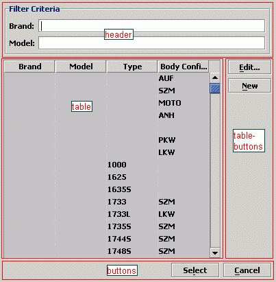

This section contains general Tips and Tricks when working with gui4j.
File tabledialog.xml:
<View> <Param id="table" /> <Param id="tablebuttons" /> <Param id="buttons" /> <Param id="header" /> <Include url="../config/styles.xml" alias="styles"/> <!-- --> <!-- Layout --> <borderLayout guiId="top"> <placeBl anchor="north" id="header"/> <placeBl anchor="center" id="tableandbuttons" /> <placeBl anchor="south" id="buttonrow"/> </borderLayout> <!-- --> <!-- Buttonrow --> <borderLayout guiId="buttonrow"> <placeBl anchor="east" id="buttons"/> </borderLayout> <!-- --> <!-- Table and Buttons--> <borderLayout guiId="tableandbuttons" > <placeBl anchor="center" id="table"/> <placeBl anchor="east" id="tablebuttonrow"/> </borderLayout> <!-- --> <!-- Table Buttons --> <borderLayout guiId="tablebuttonrow"> <placeBl anchor="north" id="tablebuttons"/> </borderLayout> <!-- --> </View> |

Note: The tabledialog.xml only does layouting. This picture shows a GUI with components. The components have only been integrated to give width and hight to the layout. |
<View top="layout/top"> <Include url="tabledialog.xml" alias="layout"> <Arg id="myTable" param="table"/> <Arg id="myTablebuttons" param="tablebuttons"/> <Arg id="myButtons" param="buttons"/> <Arg id="myHeader" param="header"/> </Include> [...] <table guiId="myTable" [...] > [...] </table> [...] </View>The tabledialog.xml file is included and four components ("myTable" etc.) are mapped to the layout template's parameters.